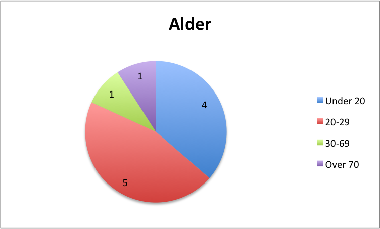

Administrative detaljer
- Klientenes navn: Magnus og Monica
- Kontaktperson: Monica Darvik
- Navn på nettsiden: Magnus & Monica
Brukerundersøkelse
Spørsmålene til denne undersøkelsen ble valgt ut med hensikt å sjekke alle usikre områder ved nettsiden, samt samle generell informasjon om brukernes inntrykk av nettsiden. Vi tok utgangspunkt i disse spørsmålene da vi live-testet nettsiden vår:
- Hva er ditt førsteinntrykk av nettsiden?
- Ser du hvor lenge er det igjen til vielsen?
- Klarer du finne veibeskrivelsen til bryllupsfesten?
- Klarer du å finne ut hvor du kan kjøpe krusene paret ønsker seg?
- Klarer du å finne ut hva slags mat de serverer?
- Fyll ut RSVP-skjemaet.
- Klarer du å komme deg tilbake til hjem-siden med færrest mulig klikk (siden som lastet da du først åpnet nettstedet)?
- Føler du at siden ga deg nok informasjon om bryllupet?
- Har du noen forslag til forbedringer?
Testpersoner
Våre testpersoner dekker en vid rekke aldere, ettersom målgruppen for nettsiden er alle bryllupsgjester. Siden mange av bryllupsgjestene kommer til å være venner og søskenbarn av kunden, som selv er 25 år, har vi testet en del i aldersgruppen 20-29 år. Vi har også testet en 57-åring og en 80-åring fordi tanter, onkler og besteforeldre også er invitert.
Alle testpersoner har blitt live-testet, slik at vi har fått maksimalt utbytte av hver test. Vi skulle gjerne ha testet flere personer i alderen 40-60, men det var vanskelig å finne testobjekter i den aldersgruppen som ville teste live.
Testplatformer
Våre testobjekter fikk velge selv om de ville teste nettsiden på pc/mac eller mobil. De fleste testet nettsiden på pc eller mac, noen gjorde begge deler. Grafen under viser nettleseren som ble brukt.

Oppsummering av tilbakemeldinger
Design
Testernes meninger rundt designet var i stor grad i overenstemmelse med hverandre. De syntes designet var enkelt og informativt. Det minimale designet gjør sidens overordnede uttrykk oversiktlig, med en enkel navigasjonsstruktur. Flere var imponerte over nedtelleren på forsiden. Det var allikevel ikke alle som var fornøyde med sidens design. Noen mente designet og fargebruken var for kjedelig. Det ble også påpekt at forsiden kunne ha vært tydeligere på at det er en bryllupsside. En bruker i aldersgruppen 50-60 mente sidens tema burde ha vært mer romantisk. Ellers mente klientene fargevalget var bra, siden er stilren og at den har et enkelt brukergrensesnitt.
Navigasjon
Alle brukere av siden fant navigasjonen intuitiv og oversiktlig. Ingen hadde problemer med å navigere seg til sidene de ble bedt om å gå til. De eldre opplevde det som mindre intuitivt at blomsten i navigasjonbaren tar dem tilbake til indeks-siden, og vurderte heller alternativer som tilbake-knappen i nettleseren eller å gå inn på den tilsendte linken på nytt. Det var allikevel lett for dem å skjønne at de kunne klikke på blomsten etter kort betenkningstid.
Innhold
Samtlige brukere fant nettsiden informativ. De syntes det var tilstrekkelig med informasjon, og at de visste alt de trengte å vite om bryllupet etter å ha sett gjennom siden. Det ble gitt forslag om å også ha en side om kleskode, ha musikk som representerer parets kjærlighet, og å ha bilder på menyen for å gjøre maten mer fristende. Noen påpekte også at det virket litt mye å bruke en hel side til "Toastmaster".
Brukervennlighet
Sidens hovedformål er brukervennlighet, ettersom det skal være mulig for alle aldersgrupper å bruke siden. Brukerne var stort sett enige om at siden var enkel å bruke, men det dukket opp et par problemområder. Som nevnt tidligere, var ikke blomstens bruk innlysende for de eldre. Klientene utpekte også et par bekymringsområder de ønsker å endre på. De vil at RSVP fanen og overskriften skal være "S.U" i stedet, fordi voksne mennesker er vant til norsk og ikke fransk. Det kan også hende unge ikke forstår hva RSVP er. I tillegg bør det stå "Navn" i stedet for "Kontaktperson" i skjemaet. De synes heller ikke det virket intuitive at "Tar med seg:" betyr andre gjester og ikke mat, som ble vist under undersøkelsen der en av de eldre fylte inn mat heller enn personer i dette feltet. I tillegg er det verdt å nevne at siden er tilpasset mobil i tillegg, men ikke er optimalisert for denne platformen. Brukerne som testet mobilversjonen bemerket at noen sider så rare ut, men at alt var lesbart og forståelig.
Vårt svar på tilbakemeldingene
Samtlige av våre testpersoner syntes siden var oversiktlig og klarte alt vi ba dem om å gjøre. Vi lurte litt på hvor mange som kom til å skjønne at logoen var hjemknappen og at man kunne trykke på ønskene. Alle under 30 år hadde ingen problemer med dette, men de to personene på 57 og 80 år måtte tenke seg litt om før de fikk til oppgave 7. De syntes derimot ikke det var lite intuitivt. Vi tror de yngre testpersonene fikk til oppgave 7 mye fortere fordi de har mer erfaring med å bruke internett. Provide your response to the feedback. Concretely, describe what you could do (once the class is over) to address this feedback with changes in your design or implementation. You can also address why some of the raised issues or suggestions for improvements are difficult or impossible to tackle. Flere av forslagene var gode og kunne implementeres, som en side om kleskode eller bilder av maten. Til tross for at siden i utgangspunkt var ment å ha et veldig minimalistisk utseende, kunne endringer ha blitt gjort for at den ikke skulle oppfattes som kjedelig. Dette kunne for eksempel mer variert fargebruk, flere bilder, en mer detaljert forside eller lignende.
Selvrefleksjon
Alle på gruppen syns det var artig å få brukt faglig stoff til et selvvalgt prosjekt vi hadde interesse for. Vi brukte en del tid på å planlegge nettsidens design og stusset litt på hvorfor det måtte gjøres så grundig, men skjønte i del 3 av prosjektet at det gjorde kodingen mye enklere. Siden all planleggingen var gjort på forhånd, var det mulig for for oss å fordele arbeidet og kode hver for oss uten at vi fikk fire forskjellige design på nettsiden. Når det gjelder kontakt med kunden, ser vi viktigheten av å ha en god dialog med kunden og å gi en statusoppdatering underveis i prosjektet slik at vi ikke ender opp med et produkt som ikke tilfredstiller kundens krav.
Vi er overasket over hvor mye man kan få til med bare HTML, CSS og Javascript. I tillegg til grunnleggende HTML har vi lagd funksjoner som gjør nettsiden dynamisk og litt mer spennende. Det har dessuten vært svært praktisk med modulær kode. Vi lærte oss å bruke Git i løpet av prosjektet ettersom Google docs og Dropbox kom til å bli tungvint i lengden. To ganger i løpet av prosjektet hadde vi ekstremt lyst til å bare knuse pc'n på grunn av Git, men bortsett fra de gangene har vi bare hatt positive erfaringer. Selv om Git kan være bra, er det fint med en backup på pc'n.